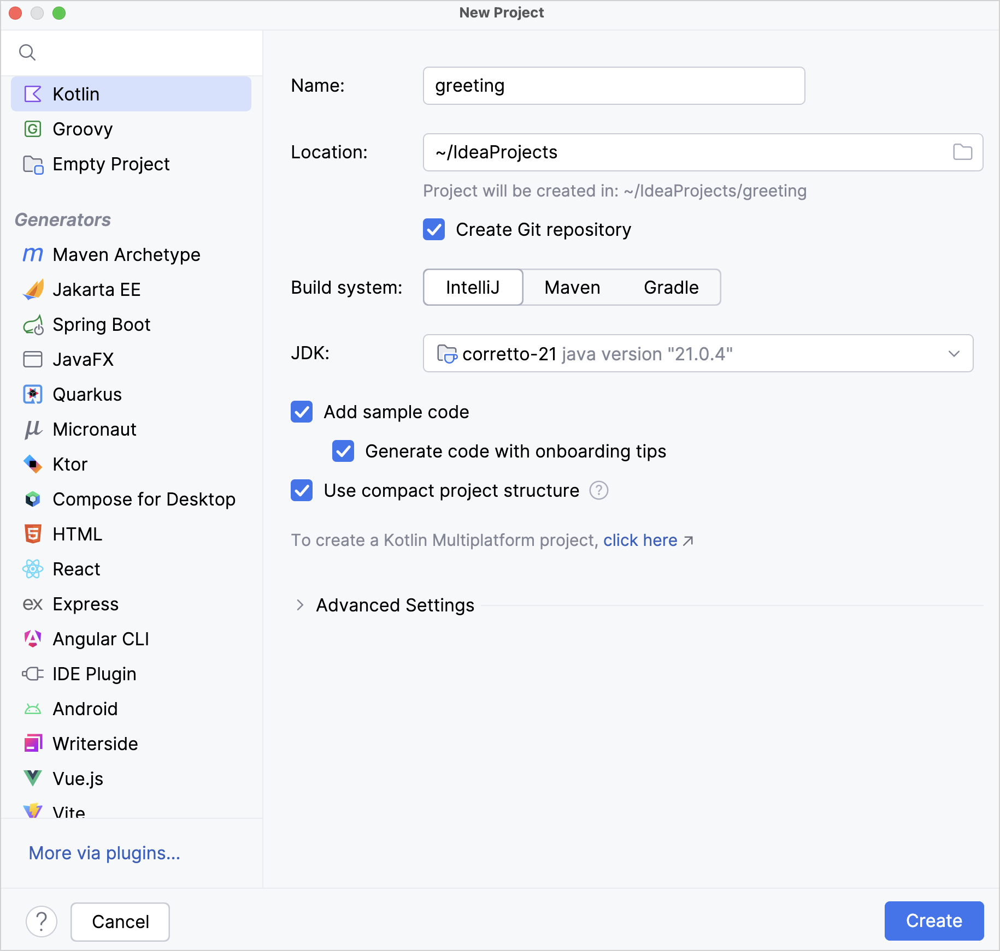
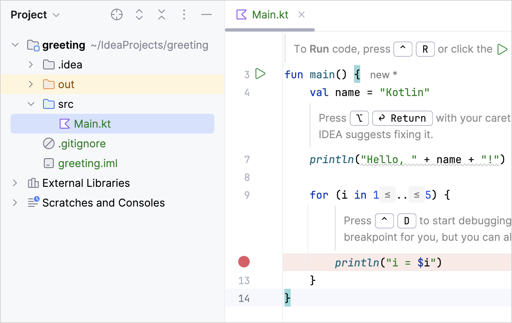
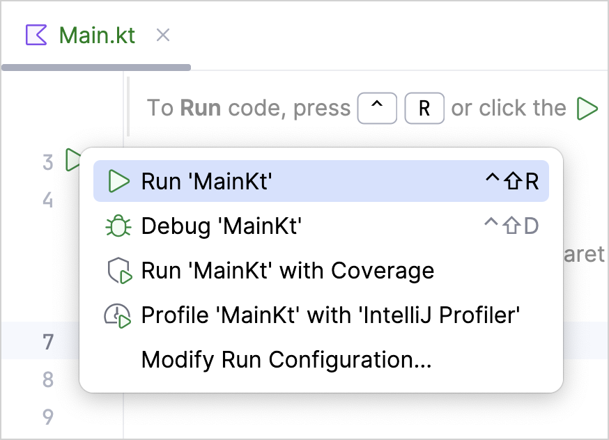
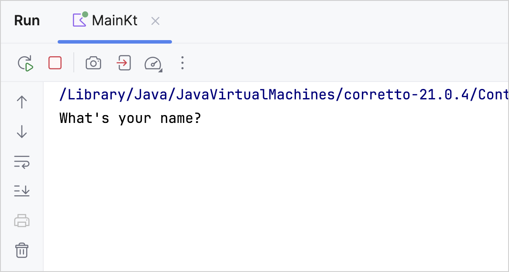
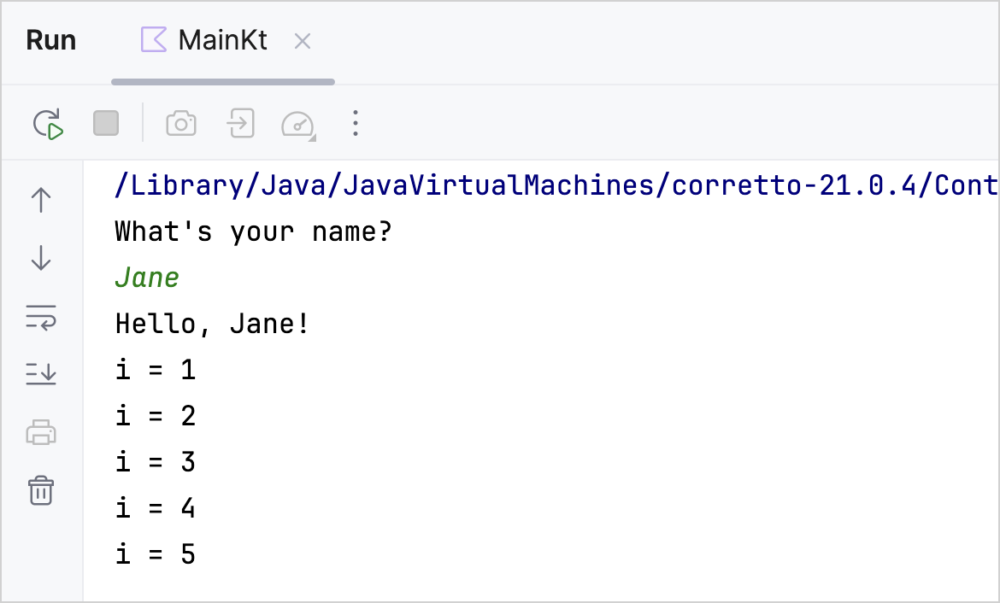

This tutorial demonstrates how to use IntelliJ IDEA for creating a console application.
To get started, first download and install the latest version of IntelliJ IDEA.
Create a project
In IntelliJ IDEA, select File | New | Project.
In the list on the left, select Kotlin.
Name the new project and change its location if necessary.

Select the IntelliJ build system. It's a native builder that doesn't require downloading additional artifacts.
If you want to create a more complex project that needs further configuration, select Maven or Gradle. For Gradle, choose a language for the build script: Kotlin or Groovy.
From the JDK list, select the JDK that you want to use in your project.
If the JDK is installed on your computer, but not defined in the IDE, select Add JDK and specify the path to the JDK home directory.
If you don't have the necessary JDK on your computer, select Download JDK.
Enable the Add sample code option to create a file with a sample "Hello World!" application.
Click Create.
Create an application
Open the Main.kt file in src/main/kotlin. The src directory contains Kotlin source files and resources. The Main.kt file contains sample code that will print Hello, Kotlin! as well as several lines with values of the cycle iterator.

Modify the code so that it requests your name and says Hello to you:
Create an input prompt and assign to the name variable the value returned by the readln() function.
Let's use a string template instead of concatenation by adding a dollar sign $ before the variable name directly in the text output like this – $name.
fun main() {
println("What's your name?")
val name = readln()
println("Hello, $name!")
// ...
}
Run the application
Now the application is ready to run. The easiest way to do this is to click the green Run icon in the gutter and select Run 'MainKt'.

You can see the result in the Run tool window.

Enter your name and accept the greetings from your application!

Congratulations! You have just run your first Kotlin application.
What's next?
Once you've created this application, you can start to dive deeper into Kotlin syntax: